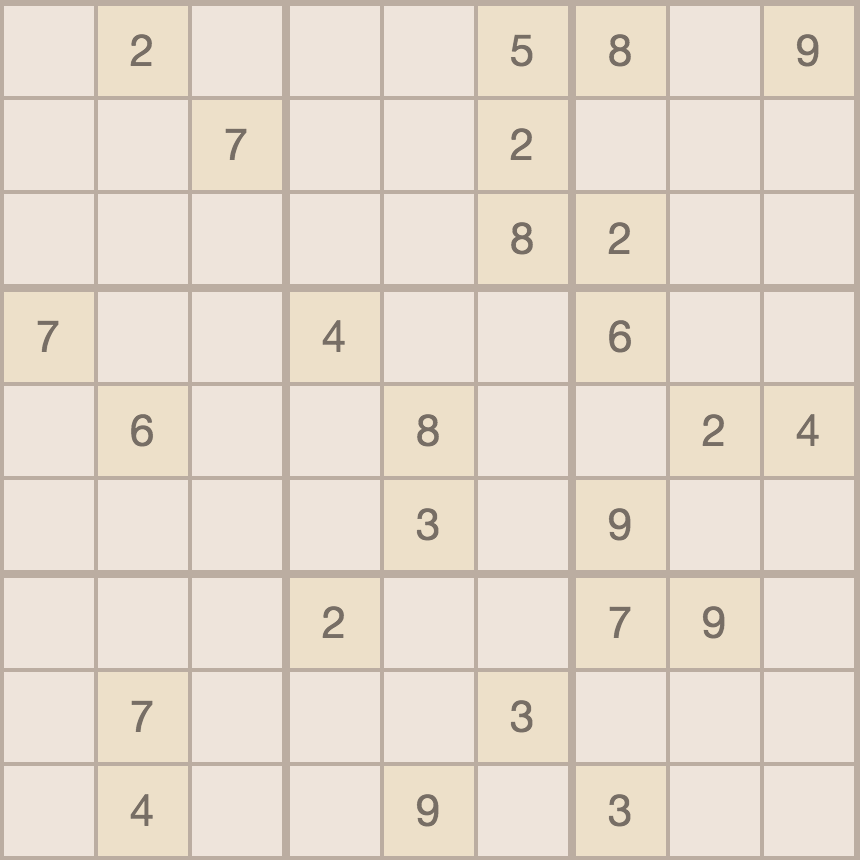
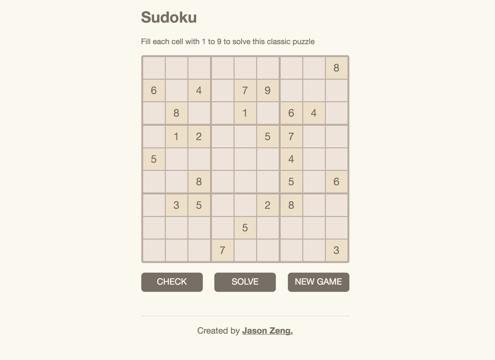
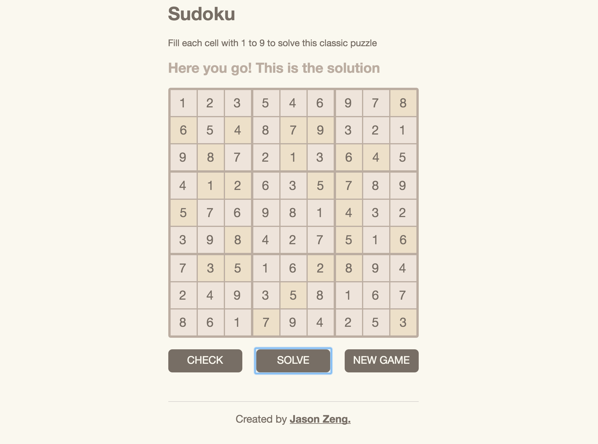
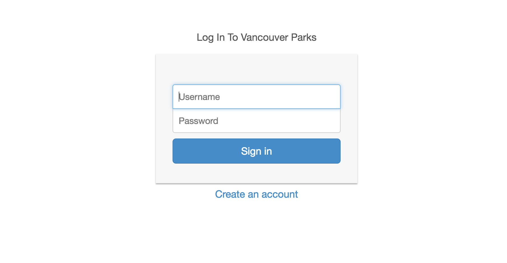
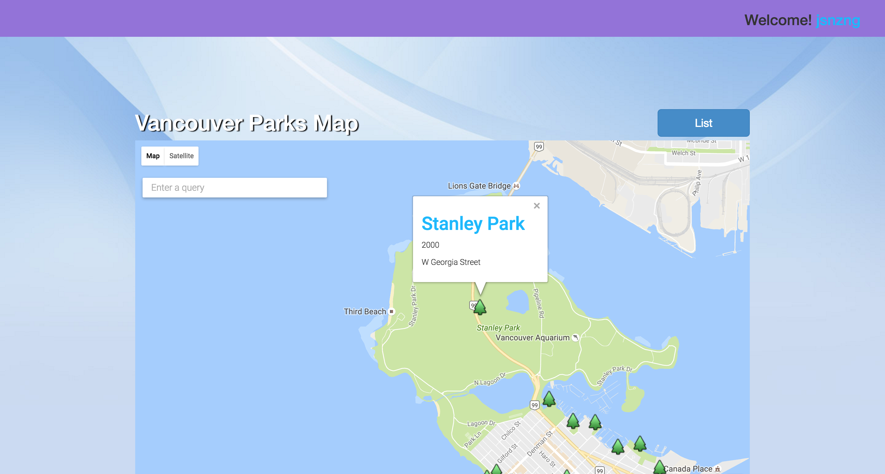

University of British Columbia2012 - 2016 Computer Science and Math, B.Sc.
Vancouver, BC
Relavent C.S. Coursework:
Data Structures and Algorithms
Software Engineering
Internet Computing
Theory of Computing
Computational Optimization
Computer Hardware and Operatin Systems
Relavent Math Coursework:
Calculus I, II, III, IV
Number Theory
Group Theory
Real Variables I, II
Complex Variables
Probability
WORK
University of British ColumbiaSept. - Dec. 2016 Undergrad Teaching Assistant
Vancouver, BC
TAing CPSC221, Basic Algorithms and Data Structures
Guiding 3 lab sections of roughly 30 students each though lab exercises, most of which are C++ programming of data structures and algorithms
Holding Weekly office hours and helping students with assignments and lecture materials
Marking Assignments, Projects and Exams
University of British ColumbiaMay - June 2016 Undergrad Teaching Assistant
Vancouver, BC
TAing CPSC221, Basic Algorithms and Data Structures
Guiding 2 lab sections though lab exercises and helping them with various problems that they encounter
Invigilating exams
Marking Assignments, Projects and Exams

Sudoku
- a classic sudoku puzzle built with javascript and html
VanParks
- a Yelp-like app built with the MEAN stack for parks look-up in Vancouver
A Project that does something using something.
Jason Zeng
- my portfolio page built from scratch
Sudoku

Randomly Generated Puzzle

Solved Puzzle
Specific, Measurable (or at least evaluable) achievement, Achievable (recently Agreed to or Acceptable are used regularly as well), Realistic (given the current state of organizational resources) and Time terminated (bounded). The evaluation (measurement) occurs at the project closure. However a continuous guard on the project progress should be kept by monitoring and evaluating. It is also worth noting that SMART is best applied for incremental type innovation projects
Specific, Measurable (or at least evaluable) achievement, Achievable (recently Agreed to or Acceptable are used regularly as well), Realistic (given the current state of organizational resources) and Time terminated (bounded). The evaluation (measurement) occurs at the project closure. However a continuous guard on the project progress should be kept by monitoring and evaluating. It is also worth noting that SMART is best applied for incremental type innovation projects
Specific, Measurable (or at least evaluable) achievement, Achievable (recently Agreed to or Acceptable are used regularly as well), Realistic (given the current state of organizational resources) and Time terminated (bounded). The evaluation (measurement) occurs at the project closure. However a continuous guard on the project progress should be kept by monitoring and evaluating. It is also worth noting that SMART is best applied for incremental type innovation projects
VanParks

Log-In Page

Map View
Specific, Measurable (or at least evaluable) achievement, Achievable (recently Agreed to or Acceptable are used regularly as well), Realistic (given the current state of organizational resources) and Time terminated (bounded). The evaluation (measurement) occurs at the project closure. However a continuous guard on the project progress should be kept by monitoring and evaluating. It is also worth noting that SMART is best applied for incremental type innovation projects
Specific, Measurable (or at least evaluable) achievement, Achievable (recently Agreed to or Acceptable are used regularly as well), Realistic (given the current state of organizational resources) and Time terminated (bounded). The evaluation (measurement) occurs at the project closure. However a continuous guard on the project progress should be kept by monitoring and evaluating. It is also worth noting that SMART is best applied for incremental type innovation projects
Specific, Measurable (or at least evaluable) achievement, Achievable (recently Agreed to or Acceptable are used regularly as well), Realistic (given the current state of organizational resources) and Time terminated (bounded). The evaluation (measurement) occurs at the project closure. However a continuous guard on the project progress should be kept by monitoring and evaluating. It is also worth noting that SMART is best applied for incremental type innovation projects
Project 3
Specific, Measurable (or at least evaluable) achievement, Achievable (recently Agreed to or Acceptable are used regularly as well), Realistic (given the current state of organizational resources) and Time terminated (bounded). The evaluation (measurement) occurs at the project closure. However a continuous guard on the project progress should be kept by monitoring and evaluating. It is also worth noting that SMART is best applied for incremental type innovation projects
Specific, Measurable (or at least evaluable) achievement, Achievable (recently Agreed to or Acceptable are used regularly as well), Realistic (given the current state of organizational resources) and Time terminated (bounded). The evaluation (measurement) occurs at the project closure. However a continuous guard on the project progress should be kept by monitoring and evaluating. It is also worth noting that SMART is best applied for incremental type innovation projects
Specific, Measurable (or at least evaluable) achievement, Achievable (recently Agreed to or Acceptable are used regularly as well), Realistic (given the current state of organizational resources) and Time terminated (bounded). The evaluation (measurement) occurs at the project closure. However a continuous guard on the project progress should be kept by monitoring and evaluating. It is also worth noting that SMART is best applied for incremental type innovation projects
Project 4
Specific, Measurable (or at least evaluable) achievement, Achievable (recently Agreed to or Acceptable are used regularly as well), Realistic (given the current state of organizational resources) and Time terminated (bounded). The evaluation (measurement) occurs at the project closure. However a continuous guard on the project progress should be kept by monitoring and evaluating. It is also worth noting that SMART is best applied for incremental type innovation projects
Specific, Measurable (or at least evaluable) achievement, Achievable (recently Agreed to or Acceptable are used regularly as well), Realistic (given the current state of organizational resources) and Time terminated (bounded). The evaluation (measurement) occurs at the project closure. However a continuous guard on the project progress should be kept by monitoring and evaluating. It is also worth noting that SMART is best applied for incremental type innovation projects
Specific, Measurable (or at least evaluable) achievement, Achievable (recently Agreed to or Acceptable are used regularly as well), Realistic (given the current state of organizational resources) and Time terminated (bounded). The evaluation (measurement) occurs at the project closure. However a continuous guard on the project progress should be kept by monitoring and evaluating. It is also worth noting that SMART is best applied for incremental type innovation projects